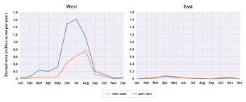

Wildfires
A wildfire is an uncontrolled fire that burns in the wildland vegetation, often in rural areas. Wildfires can burn in forests, grasslands, savannas, and other ecosystems, and have been doing so for hundreds of millions of years. They are not limited to a particular continent or environment. Wildfires can burn in vegetation located both in and above the soil. Ground fires typically ignite in soil thick with organic matter that can feed the flames, like plant roots. Ground fires can smolder for a long time—even an entire season—until conditions are right for them to grow to a surface or crown fire. Surface fires, on the other hand, burn in dead or dry vegetation that is lying or growing just above the ground. Parched grass or fallen leaves often fuel surface fires. Crown fires burn in the leaves and canopies of trees and shrubs. Some regions, like the mixed conifer forests of California’s Sierra Nevada mountain range, can be affected by different types of wildfires. Sierra Nevada forest fires often include both crown and surface spots. Wildfires can start with a natural occurrence—such as a lightning strike—or a human-made spark. However, it is often the weather conditions that determine how much a wildfire grows. Wind, high temperatures, and little rainfall can all leave trees, shrubs, fallen leaves, and limbs dried out and primed to fuel a fire. Topography plays a big part too: flames burn uphill faster than they burn downhill. Wildfires that burn near communities can become dangerous and even deadly if they grow out of control. For example, the 2018 Camp Fire in Butte County, California destroyed almost the entire town of Paradise; in total, 86 people died. Still, wildfires are essential to the continued survival of some plant species. For example, some tree cones need to be heated before they open and release their seeds; chaparral plants, which include manzanita, chamise (Adenostoma fasciculatum), and scrub oak (Quercus berberidifolia), require fire before seeds will germinate. The leaves of these plants include a flammable resin that feeds fire, helping the plants to propagate. Plants such as these depend on wildfires in order to pass through a regular life cycle. Some plants require fire every few years, while others require fire just a few times a century for the species to continue. Wildfires also help keep ecosystems healthy. They can kill insects and diseases that harm trees. By clearing scrub and underbrush, fires can make way for new grasses, herbs, and shrubs that provide food and habitat for animals and birds. At a low intensity, flames can clean up debris and underbrush on the forest floor, add nutrients to the soil, and open up space to let sunlight through to the ground. That sunlight can nourish smaller plants and give larger trees room to grow and flourish. While many plants and animals need and benefit from wildfires, climate change has left some ecosystems more susceptible to flames, especially in the southwest United States. Warmer temperatures have intensified drought and dried out forests. The historic practice of putting out all fires also has caused an unnatural buildup of shrubs and debris, which can fuel larger and more intense blazes. Wildfires Wildfires scorch the land in Malibu Creek State Park. As the wind picks up, the fire begins to spread faster.
How wildfires start

Wildfires do sometimes occur naturally, either ignited by the sun's heat or a lightning strike. However, most wildfires are caused by human activities, including unattended campfires, discarded cigarettes, arson and more. “Human carelessness is the biggest factor contributing to wildfires,” Roise said.
What impact do wildfires have on a business
In addition to the direct impact an out-of-control fire can have on your building and property, businesses can also suffer indirect consequences such as service disruption, transportation stoppage and utility interruption.
Policy and management measures that reduce the likelihood of damage or failure of equipment wildfire.
Statistics:
In 2020 there were 58,950 wildfires compared with 50,477 in 2019, according to the National Interagency Fire Center. About 10.1 million acres were burned in 2020, compared with 4.7 million acres in 2019.
How to survive wildfires?
• Stay calm.
• Park your vehicle in an area clear of vegetation.
• Close all vehicle windows and vents.
• Cover yourself with wool blanket or jacket.
• Lie on vehicle floor.
• Use your cell phone to advise officials—call 911.
Real life wildfire survivor
Earthquakes
An earthquake is an intense shaking of Earth's surface. The shaking is caused by movements in Earth's outermost layer and an earthquake is the sudden movement of Earth's crust. Earthquakes occur along fault lines, cracks in Earth's crust where tectonic plates meet. They occur where plates are subducting, spreading, slipping, or colliding. As the plates grind together, they get stuck and pressure builds up.
How are earthquakes caused or hy do they happen?

The tectonic plates are always slowly moving, but they get stuck at their edges due to friction. When the stress on the edge overcomes the friction, there is an earthquake that releases energy in waves that travel through the earth's crust and cause the shaking that we feel.
How are businesses affected by earthquakes
Earthquakes can topple buildings, destroy contents, and render information systems unusable. Roads, bridges, and other infrastructure may be damaged which can cripple businesses that rely on them such as transportation.
Gas lines can also be damaged by earthquakes. it can throw a business's carefully laid plans and projections into disarray. Supply chains may be broken, employees might be unable to get to work, and vital facilities or equipment could be damaged.
Statistics:
Earthquakes usually occur on the edges of large sections of the Earth's crust called tectonic plates. Each year, there are an estimated 500,000 earthquakes that can be detected around the world. There are 100,000 of them, and 100 of them inflict damage. Earthquakes usually happen around the west side of the earth in the bottom part of North America and the top part of South America. Earthquakes also commonly occur in Asia around Indonesia, Japan, and Pakistan.
How to survive earthquakes?
• If you are in a car, pull over and stop. Set your parking brake.
• If you are in bed, turn face down and cover your head and neck with a pillow.
• If you are outdoors, stay outdoors away from buildings.
• If you are inside, stay and do not run outside and avoid doorways.
• Identify Your Home's Potential Weaknesses.
• Drop, Cover, and Hold On.
• After the Shaking Stops Check for Damages and Injuries Needing Immediate Attention.
An interview with an Earthquake disaster survivor
Droughts
A drought is a period of time when an area or region experiences below-normal precipitation. The lack of adequate precipitation, either rain or snow, can cause reduced soil moisture or groundwater, diminished stream flow, crop damage, and a general water shortage. Droughts are the second-most costly weather events after hurricanes. Unlike with sudden weather events such as hurricanes, tornadoes, and thunderstorms, it is often difficult to pinpoint when a drought has started or when it has ended. The initial effects of a drought may be difficult to identify right away, so it may take weeks or months to determine that a drought has started. The end of a drought is hard to identify for the same reason. A drought may last for weeks, months, or even years. Sometimes, drought conditions can exist for a decade or more in a region. The longer a drought lasts, the greater the harmful effects it has on people. Droughts affect people in a several ways. Access to clean drinking water is essential for all life, and sources of water may dwindle during a drought. Without the presence of water, people must bring in enough water from elsewhere to survive. Water is also needed for crops to grow. When not enough precipitation falls to naturally water crops, they must be watered by irrigation. Irrigation is possible only when there is enough water in nearby rivers, lakes, or streams, or from groundwater. During a drought, these water sources are diminished and may even dry up, preventing crops from being irrigated and causing them to die off. One person studying these problems is Alexandra Cousteau, a National Geographic Emerging Explorer whose latest initiative is Blue Legacy. She started Blue Legacy to raise awareness that we live on a water planet and must take care of it. Cousteau, the granddaughter of the famed ocean explorer Jacques Cousteau, believes that water will be a crucial issue in this century. She predicts that water problems such as drought, storms, floods, and degraded water quality will create “water refugees:” people migrating in search of water. Cousteau stresses that we must do all we can to protect Earth’s valuable freshwater resources.
how are droughts formed?
>
Droughts are caused by low precipitation over an extended period of time. Atmospheric conditions such as climate change, ocean temperatures, changes in the jet stream, and changes in the local landscape are all factors that contribute to drought.
How are businesses affected by Droughts and what should we do in response?
Businesses are sensitive to drought, especially when key components of their operations are dependent upon water at a specific quality and time. However, some of the major water-related risks that businesses face are made worse by poor functioning water supply systems. This is especially true in smaller municipalities. Although businesses (especially large businesses) have vocalised their concerns regarding water, limited active measures have been put in place to mitigate these risks. Businesses sit at the interface of the water value chain and a particular products’ supply chain. Depending on where they sit, their risks are distinct. Therefore, it is not only about the water supply to a single company, but also the water supply to their labour, customers and community. Water and business is more than purely water for inputs. This is why businesses need to be good water stewards, and consider their role in water outside the factory fence. “Businesses”, both large and small, are difficult to segregate into a specific sector. We have considered the business sector as all businesses that are using water within a small city or town. Therefore their usage is considered urban in nature. As a result of the drought, businesses in towns or cities do not have secure access to water to carry out their operations. The national development plan articulates the important role of small business and co-operatives in achieving inclusive economic growth, and that these small enterprises are key to achieving the plan’s job creation target for 2030. In 2010, South Africa had nearly six-million small companies; over 60% of the owners had left school before matric, while 58% of small business owners were women. Most small businesses are informal SMMEs. The impact of drought on the sector is dependent on the importance of water for various types of small business. For small businesses that are particularly dependent on water for operations, water restrictions or supply interruptions impact on revenue and income and the business becomes threatened. The businesses most affected by droughts include food, hairdressers, launderettes, and car washes. In the town of Thaba Nchu (where most small companies surveyed were in the informal sector, and had a turnover of less than R50,000 per annum) the most vulnerable were butcheries which use a lot of water for production, and grocers that use water for keeping vegetables fresh. The drought negatively impacted on them; for instance, vegetables withered due to lack of water and could not be sold. Some 87% of businesses reported losing over half their revenue due to the drought. One grocer stated that the impact of the drought was mainly experienced in the ablution facilities where there was inadequate water for staff and product hygiene. The facility could only deliver poor service and this negatively affected customers and staff. As a short-term response, the grocer bought a 2,000 litre JoJo tank. One taxi operator stated that the impact of the drought was mostly felt by his customers. Since they did not have money to afford taxi fares, there were very few customers asking for a ride (business was very poor). The lack of water also had an impact on sanitation: it was not possible to wash his taxi, which negatively impacted on custom. A small-scale fashion designer stated that a consistent water supply was essential for ironing and washing. Since water was in short supply, they had to fetch it from a stand pipe tap; only a five-minute walk away but the queue at the stand pipe took 30 minutes, wasting business time. The fetched water was insufficient for bathing, drinking, cleaning, cooking for the employees – activities they needed to do in the course of the day. Thus, they had to make trade-offs: employees had to stop bathing at work, with the saved water used for the business. The impact of the recent drought on large businesses in South Africa has also been severe. The recent CDP report on water said that 83% of respondents reported “that their direct operations are exposed to water-related risks, the highest of any sample in the world, with more than half of these risks expected to manifest within the next three years and with two-thirds of those risks having a financial impact of medium to high”. Around 70% of respondents said they had already had their business damaged by water risks in 2015 . We need to promote good water stewardship among the businesses of South Africa. This may include helping businesses consider their role in the water system beyond their own operational needs. Each company represents a number of employees, customers and a community. All of these people require secure access to water for their business to thrive. Therefore, business should consider their role in supporting good water management as a long-term strategic investment into their business. No single business can do this alone. Working together is of paramount importance. We need to better understand our businesses and the risks that they are facing. There are initiatives under way, such as the CDP Water questionnaire, but these are focussed on large businesses. The Ministry of Small Business Development needs an analysis of the water-related risks to small businesses as a core component of their activities to ensure that small business does not suffer as a result of drought when mitigating activities could be put in place beforehand. We need to interrogate the response of government to businesses that increase their water efficiency. This is because, during times of drought, when a blanket reduction of water usage is effected, those that are the most efficient suffer the most. This is a perverse outcome which does not support the right behaviour. We need to consider how to reward good actions that companies undertake before a drought comes into effect.
Statistics:
An estimated 55 million people globally are affected by droughts every year, and they are the most serious hazard to livestock and crops in nearly every part of the world. Drought threatens people's livelihoods, increases the risk of disease and death, and fuels mass migration.
How to survive and prepare for possible droughts?
• Plant native and/or drought-tolerant grasses, ground covers, shrubs and trees. They don't need water as frequently and usually will survive a dry period without watering.
• Install water efficient irrigation devices, such as micro and drip irrigation and soaker hoses.
• Use mulch to retain moisture in the soil.
• Conserve Water with Daily Tasks.
• Capture Rainwater.
• Work as a Community.
An interview with a drought survivor
Tsunami's
A tsunami is a sequence of extraordinarily long waves created by a huge and sudden shift in the ocean floor, which is usually caused by an earthquake beneath or near the ocean floor. This force generates waves that travel in all directions away from their source, spanning entire ocean basins in the process. Tsunamis travel through the entire water column, from the ocean floor to the ocean surface, unlike wind-driven waves, which only travel through the highest layer of the.
What causes a Tsunami?
style="float: right; margin-left: 10px; object-cover: cover; width: 1000px; height: 700px;" >
A tsunami is a series of extremely long waves caused by a large and sudden displacement of the ocean, usually the result of an earthquake below or near the ocean floor. This force creates waves that radiate outward in all directions away from their source, sometimes crossing entire ocean basins.
how are businesses affected by tsunami's
Immediately following a tsunami disaster, many businesses will be unable to trade because of destruction to premises, stock, machinery, facilities, transport networks, supplies and loss of staff.
Statistics:
2021 Earthquakes: On February 13 a 7.1 magnitude earthquake struck off the coast of Japan’s Fukushima Prefecture near the area of the devastating 2011 quake. According to Aon as many as 4,700 residential structures were damaged or destroyed. Total economic losses were expected to reach into the hundreds of millions of dollars. 2020 Earthquakes: Croatia experienced the strongest earthquake in 140 years on December 29, a 6.4 magnitude quake 50 km southeast of the capital, Zagreb. The Economic Ministry of Croatia estimated that insured losses would be about $63.5 million, a tiny fraction of the $13.7 billion in total losses. In March, an earthquake with a magnitude of 5.3 struck the region north of Zagreb, causing property losses of $1.8 billion according to Munich Re. In the United States, on January 7, a 6.5-magnitude earthquake struck southwest Puerto Rico, which lies in a tectonically active region. The island had not had a quake of this level since 1918. The 2020 quake caused widespread damage to infrastructure in a region that is still recovering from the effects of 2017’s Hurricane Maria. 2019 Earthquakes: In the United States, the sparsely populated Ridgecrest City section of California was struck by a pair of significant earthquakes in 2019. On July 4 a 6.4-magnitude “foreshock” earthquake hit the area, followed by a stronger 7.1-magnitude quake the following day, along with a number of aftershocks. The 7.1 quake was the largest to hit the state in 20 years. According to Karen Clark and Co., insured losses from the quakes are estimated to total less than $40 million. 2018 Earthquakes: On September 5 an earthquake struck Hokkaido, Japan which left dozens dead and caused more than $1.7 billion in damage, according to Aon. On June 17 another strong earthquake impacted Osaka Japan, resulting in insured losses of at least $935 million. In the United States, a magnitude 7.0 tremor struck near Anchorage, Alaska on November 30. losses totaled more than $150 million. 2011 Earthquakes: On March 11, 2011 a devastating tsunami hit the coast of northeast Japan, triggered by a powerful earthquake approximately 80 miles offshore. The quake and tsunami caused $40 billion in insured damages when it occurred ($46 billion in 2020 dollars), according to Munich Re. Also, in February 2011 a powerful earthquake struck Christchurch, New Zealand, resulting in $16.5 billion in insured damages when it occurred ($19 billion in 2020 dollars) . The Japan and New Zealand quakes are among the 10 costliest world earthquakes and tsunamis, based on insured damages, according to Munich Re (see table). Tsunamis may travel thousands of kilometers and reach speeds of up to 800 km/h. They can have disastrous effects on the town once they reach the coast. Several crests can appear at periods of 10 to 45 minutes, wreaking havoc for several hours.
How to survive it?
• Evacuate on foot if possible.
• Follow tsunami evacuation route signage.
• Get to high ground.
• Climb to the top of a building if you’re trapped.
• Go as far inland as possible.
• Grab something floating if you’re in the water.
• Stay in your safe spot for at least 8 hours.
An interview with a family that survived a tsunami